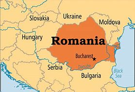
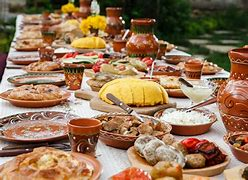
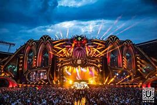
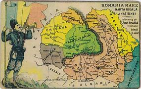
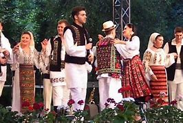

Overview
Romania, located in Eastern Europe, is known for its famous landscapes, from the Carpathian Mountains to the Black Sea coastline. Rich in history and culture, it is home to landmarks such as Bran Castle, often associated with the Dracula legend, and the well-preserved medieval towns of Transylvania. The country's vibrant traditions, flavorful cuisine, and warm hospitality make it a captivating destination for visitors worldwide.
Food
Romanian cuisine is a flavorful mix of tradition and local ingredients, featuring dishes like cabbage rolls and cornmeal porridge. Sweet treats such as cozonac (sweet bread) highlight its comforting essence. Each meal reflects Romania's rich cultural heritage.
Festivals
Romanian festivals are a dynamic mix of traditional and modern celebrations, reflecting the country's evolving culture. Alongside traditional events, Romania hosts contemporary festivals such as Untold, one of Europe's largest electronic music festivals, and Electric Castle, combining cutting-edge music with historic settings. These modern festivals attract global audiences, blending Romania's heritage with a fresh, vibrant energy.
History
Romania's history is shaped by ancient civilizations, medieval kingdoms, and modern resilience. In the 20th century, Romania emerged from communist rule to embrace democracy and forge a dynamic national identity.
Music
Romanian music reflects a deep connection to its folklore and diverse cultural influences. Instruments like the pan flute and violin remain iconic in its musical heritage.